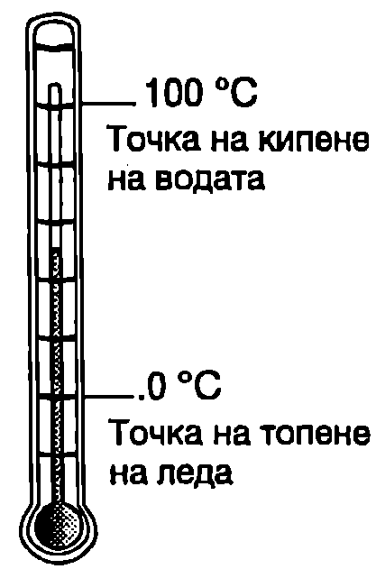
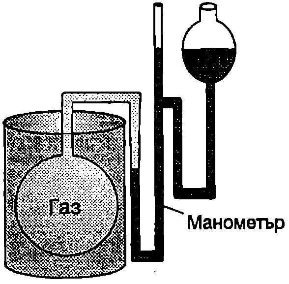
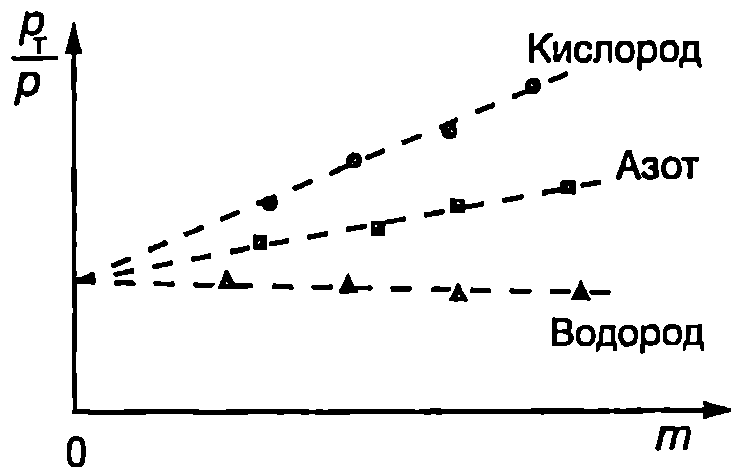
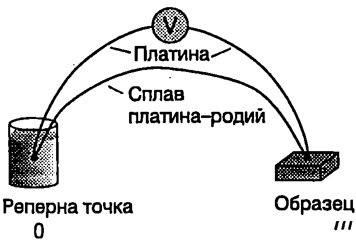

Макроскопична система и параметри
Под макроскопична система се разбира всяко тяло или съвкупност от тела, които са съставени от много голям, но все пак краен брой частици. Човешкото тяло, което е изградено от около клетки, е пример за макросистема. Дори отделната клетка, която съдържа около - атома, също може да се разглежда като макроскопична система. Величините, които характеризират вътрешното състояние на една макросистема и нейното отношение към околната среда, се наричат макроскопични параметри. Те се разделят на две групи: вътрешни параметри и външни параметри. Външните параметри () зависят от положението на външните за системата тела. Например обемът на газа е външен параметър, който се определя от положението на стените на съда (външно тяло). Земното ускорение е външен параметър за макросистема, намираща се в гравитационното поле на Земята и т.н. Вътрешните параметри () се определят от положението и движението на влизащите в системата тела и частици. Примери за вътрешни параметри са налягането, плътността, енергията на топлинно движение и др.
Съвкупността от независимите външни и вътрешни параметри задава състоянието една макросистема. Величините, чиито стойности еднозначно се определят от състоянието на системата, т.е. от нейните параметри, се наричат функции на състоянието.
Една макроскопична система се намира в състояние на термодинамично равновесие, ако нейните параметри не се изменят с течение на времето и в системата не съществуват макроскопични стационарни потоци, поддържани от външни източници (например ламинарно течение на флуид). По-нататък термодинамични системи ще наричаме само такива макроскопични системи, които се намират в състояние на термодинамично равновесие или се доближават до него.
Постулати на термодинамиката
Като макроскопична теория термодинамиката се основава на два постулата и три основни закона (принципа), които са обобщение на опита.
Първи постулат: За всяка изолирана система (система, която не обменя енергия и вещество с околната среда) съществува състояние на термодинамично равновесие, което тя достига с течение на времето и не може самопроизволно да излезе от него.
Формулираният постулат може да се обоснове, като се използват методите на молекулната (статистическа) физика. Статистическата физика доказва, че от всички възможни състояния на една макросистема най-вероятно е равновесното състояние, което се характеризира с най-голям безпорядък (хаотичност) в движението и положението на частиците. Равновесното състояние се реализира по възможно най-много начини и вероятността системата спонтанно да премине в друго, по-подредено състояние, е пренебрежимо малка.
Чрез втория постулат се въвежда величината температура, която характеризира състоянието на вътрешно движение в една равновесна система. Опитът показва, че ако две равновесни системи А и В се приведат в топлинен контакт, независимо от стойностите на техните външни параметри, в едни случаи равновесието се запазва, а в други то се нарушава - започват процеси на обмен на енергия (топлообмен), в резултат на които се достига до ново равновесно състояние. Освен това за термодинамичното равновесие е характерно свойството транзитивност: ако системите А и В поотделно се намират в равновесие със системата C, то при контакт те ще се намират в равновесие и помежду си.
Следователно за характеризиране на равновесното състояние освен външните параметри е необходима още една величина, която се нарича температура. При контакт между две термодинамични системи равновесието не се нарушава, ако те имат еднакви температури. Свойството транзитивност позволява да се сравняват температурите на две системи без те да се привеждат в контакт. За целта се използва трето тяло, наречено термометър, което последователно се привежда в контакт с двете системи.
Ако при контакт между две равновесни системи равновесието се наруши, по-висока температура има системата, която отдава енергия при настъпилия топлообмен. След топлообмена се установява Ново равновесно състояние, което се характеризира с една и съща температура за двете системи.
Температурата е мярка за интензивността на топлинното движение. Тя е вътрешен параметър, който има една и съща стойност за всички части на една равновесна система. Останалите вътрешни параметри зависят от температурата и от външните параметри.
Втори постулат: Равновесните вътрешни параметри на една термодинамична система са функции на външните параметри и температурата.
Твърдението, че топлинното движение В равновесните системи се характеризира със специална величина, наречена температура, понякога се формулира като нулев принцип на термодинамиката.
Живачен (спиртен) термометър
Свойството транзитивност на термодинамичното равновесие позволява да се сравнява температурата на две тела без те да се привеждат в контакт едно с друго. За целта се използва трето тяло, наречено термометър. Термометърът съдържа термометрично вещество, което се привежда в топлинен контакт с тялото, чиято температура се измерва. За индикатор на температурата служи някой от параметрите на термометричното вещество, например обем или налягане, който се нарича термометрична величина.
На Фиг. \ref{fig:28.1} е показан известният от всекидневието термометър, при който термометричното вещество е течност (спирт или живак), която запълва тънка стъклена тръбичка, завършваща със сферичен резервоар. Термометричната величина е обемът на течността. Термометърът се градуира по температурната скала на Целзий, която използва две реперни точки: температурите на топене на леда (0°C) и на кипене на водата (100°C) при нормално атмосферно налягане (101 325 Pa). Термометърът се поставя в равновесие с топящ се лед и се отбелязва равнището на течността в тръбичката, което съответства на температура 0°C. След това термометърът се поставя в контакт с кипяща вода и след като се установи топлинно равновесие се отбелязва равнището на течността, съответстващо на температура 100°C. Разстоянието между двата белега се разделя на 100 равни части, всяка от които отговаря на 1°C.
\begin{figure}[h!] \centering  \caption{} \label{fig:28.1} \end{figure}
При описания начин на градуиране показанията на два термометъра, използващи различни течности, съвпадат напълно само в реперните точки, а се различават при всички останали температури. Например, ако с живачен термометър измерим, че температурата на чаша с вода е 50°C, то спиртен термометър, потопен в същата чаша, ще покаже 49,5°C. Съвсем странни биха били показанията на термометър, който използва вода за термометрично вещество. При 4°C, където плътността на водата е максимална, водният термометър би показал отрицателна температура. Причината е в нелинейния характер на зависимостта на термометричната величина от температурата. Например законите, по които се изменя обемът на водата, спирта и живака при нагряване, са различни и затова показанията на термометрите зависят от избора на термометричното вещество. Тази нееднозначност в определянето на температурата почти напълно се отстранява, ако за термометрично вещество се използва достатъчно разреден (идеален) газ.
Газов термометър
\begin{figure}[h!] \centering  \caption{Газов термометър} \label{fig:28.2} \end{figure}
На Фиг. \ref{fig:28.2} е показана опростена схема, илюстрираща принципа на действие на газовия термометър. Запълнен с газ балон е свързан към отворен живачен манометър. Обемът на газа се поддържа постоянен, а за термометрична величина се избира налягането, което се измерва с манометъра. Газовият термометър използва само една реперна точка. За такава се избира тройната точка на водата. Тройна точка се нарича температурата, при която трите фази на водата - лед, течност и пара, са в равновесие помежду си (вж. \ref{sec:41}). На тройната точка на водата съответства температура 0,01°C. Тази реперна точка е предпочетена пред температурите на кипене и замръзване на водата, тъй като може да се възпроизвежда с много по-голяма точност ( 0,00008°C).
Да означим с температурата на тройната точка на водата, а с налягането на газа, когато се намира при тази температура. Газовият термометър се потапя в съд с нагрята течност (например кипяща вода). Когато се установи топлинно равновесие, манометърът показва някакво ново (по-високо) налягане на газа. Тогава температурата на течността може да се определи чрез отношението на двете стойности на налягането
Опитът показва, че ако се използват различни газове (например водород, азот и кислород) при високо начално налягане , отношението е различно за различните газове. Ако се намалява масата на газа в балона, стойността на това отношение започва все по-слабо да зависи от вида на газа и в граничния случай на силно разреден газ (когато масата на газа клони към нула) то е практически еднакво за всички газове. На Фиг. \ref{fig:28.3} са показани резултати от измерванията на отношението за три различни газа. Вижда се, че
Следователно температурата , съответстваща на налягане , може да се определи еднозначно, независимо от вида на газа, с който работи газовият термометър, по формулата
По определение се приема, че температурата на тройната точка на водата е K. При такава стойност на , скалата на газовия термометър съвпада с абсолютната термодинамична температурна скала (скала на Келвин), която изобщо не зависи от избора на термометричното вещество и се въвежда въз основа на втория принцип на термодинамиката.
Освен това, когато се приеме , запазва се разликата от 100 градуса между температурите на топене на леда и на кипене водата при нормално налягане. По този начин газовата термометрична скала, както и абсолютната термодинамична скала на Келвин, се различава от скалата на Целзий само по положението на нулата, докато големината на един градус в двете скали съвпада. Прието е температурата, когато се измерва в градуси Целзий, да се означава с t (°C), а когато е измерена в келвини (К), да се означава с . Връзката между двете температурни скали е \eqref{eq:28.4}
\begin{figure}[h!] \centering  \caption{} \label{fig:28.3} \end{figure}
където 273,15 К е температурата на топене на леда при нормално налягане ( съответства на 273,15 К).
Международна практическа температурна скала
Независимо че принципът на действие на газовия термометър е много прост, самият термометър представлява едно изключително сложно и скъпоструващо съоръжение, с каквото са снабдени само отделни метрологични центрове в света. Освен това прецизните измервания с газов термометър се извършват много бавно и понякога продължават с месеци. Затова се използват други, по-бързи и по-евтини методи за точно измерване на температурата. За целта е създадена практическа температурна скала, приета от Международния комитет по мерки и теглилки през 1968 година. Международната практическа температурна скала от 1968 година (МПТС-68) се основава на набор от реперни точки (вж. таблица 28.1), чиито стойности са определени с максималната възможна точност с помощта на газови термометри.
Освен реперните точки МПТС определя процедури за получаване на междинните температури. Ниските температури се измерват с полупроводникови (германиеви) съпротивителни термометри, а в интервала на средните температури се използват платинови съпротивления и термодвойки платина-сплав платина и родий. Високите температури се измерват с оптически пирометри.
\begin{figure}[h!] \centering  \caption{Измерване на температура с термодвойка.} \label{fig:28.4} \end{figure}
В съпротивителните термометри се използва фактът, че електричното съпротивление (термометрична величина) на чистите метали и полупроводници се изменя с температурата по закони, които са възпроизводими с висока точност. Начинът за измерване на температура с термодвойка се илюстрира от Фиг. \ref{fig:28.4}. Двата края на проводници, направени от различни метали или метални сплави, се запояват един към друг. След това единият проводник се разрязва и се свързва към чувствителен волтметър. Едната спойка се поставя при температура , съответстваща на някоя от реперните точки, а другата - при температурата , която трябва да се измери. Когато двете спойки се намират при различни температури, възниква т. нар. термоелектродвижещо напрежение, чиято големина по достатъчно точно възпроизводим начин нараства при увеличаване на температурната разлика . Термоелектродвижещото напрежение се измерва с волтметъра и по градуировката, която е приложена към паспорта на всяка стандартна термодвойка, се изчислява температурата.
Равновесни и неравновесни процеси
Когато някои от параметрите на една макросистема се изменят с течение на времето, казва се, че в системата протича процес. Например, ако обемът на дадено количество газ нараства, протича процес на разширение на газа, при който освен обемът могат да се изменят налягането, температурата, енергията и други параметри на газа. Един процес е равновесен, ако може да се представи като последователност от равновесни състояния, т.е. когато параметрите на системата се променят толкова бавно, че можем във всеки момент от времето да смятаме, че системата се намира в равновесно състояние. Равновесните процеси се описват със същия набор от параметри, както равновесното състояние. Ще обърнем внимание, че не всички много бавни процеси са равновесни. Например при определени условия топлообменът между две тела може да се извършва много бавно, но такъв процес никога не е равновесен, защото различните части от телата се намират при различна температура докато се извършва топлообмен, системата от две тела не е в топлинно равновесие.
Описването на неравновесните процеси е много по-сложно. Примери за силно неравновесни процеси са разширението на газ във вакуум, турбулентното движение на течност, метаболизмът в клетките на живите организми и др. Неравновесни са и процесите на релаксация, чрез които една изолирана система преминава в равновесно състояние. В действителност всички реални процеси са неравновесни — те протичат с крайни скорости, при което се нарушава равновесието. В много случаи обаче реалните процеси с приближение могат да се разглеждат като равновесни. Изучаването на равновесните процеси е важно и за това, че при тях редица величини достигат своите максимални стойности. При равновесен процес една система върши максимална работа, а топлинните машини имат максимален коефициент на полезно действие. Затова чрез анализ на равновесните процеси се определя горната граница за параметрите на топлинните машини, което има голямо практическо значение.
Задачи
- В англоезичните страни широко се използва температурната скала на Фаренхайт. Пресмятането на температурата в градуси Фаренхайт (°F), когато е известна температурата в градуси Целзий (°C), става с помощта на формулата
а) Колко градуса Фаренхайт са температурите на топене на леда и на кипене на водата?
б) При каква температура термометрите, градуирани по двете скали, ще показват еднакви стойности?
в) Нормалната телесна температура на човека е 36,8 °C. Представете тази температура в градуси Фаренхайт.
г) Най-ниската температура на Земята е измерена в Сибир (-71°C), а най-високата температура е измерена в Калифорния (134°F). Определете разликата между двете температури по скалите на Целзий, Келвин и Фаренхайт.